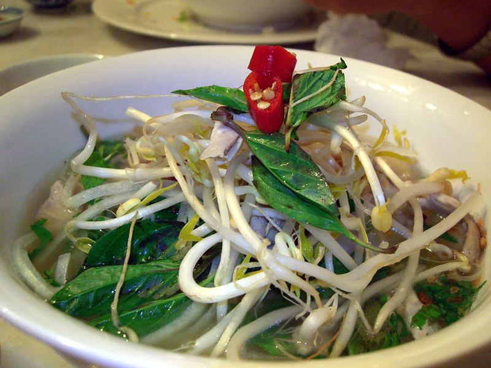

Chicken Pho Recipe

A delicious chicken pho recipe - enjoy this vietnamese staple at home!
Ingredients:
- 4 ounces dry chinese egg noodles
- 6 cups chicken stock
- 2 tablespoons fish sauce
- 4 cloves garlic, minced
- 2 teaspoons minced fresh ginger root
- 1 tablespoon minced lemon grass
- 5 green onions, chopped
- 2 cups cubed cooked chicken
- 1 cup bean sprouts
- 1 cup chopped bok choy
Directions:
- Bring a large saucepan of water to a boil over high heat. Add noodles and return water to boil. Boil until soft, about 8 minutes. Drain and reserve noodles.
- Bring chicken stock, fish sauce, garlic, ginger, lemon grass, and green onions to a boil in a large pot. Reduce to a simmer; cook for 10 minutes. Stir in the chicken, bean sprouts, and bok choy. Cook pho until heated through, about 5 minutes.
- Divide the cooked noodles between 2 large bowls. Pour pho over noodles; serve immediately
Back to Other Recipes